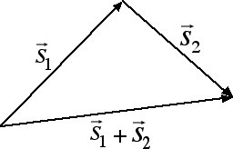
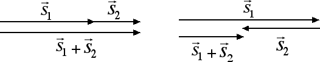

Forze e vettori
Introduzione al calcolo vettoriale
Supponiamo di essere al centro di una stanza e di volerci spostare in linea retta di 1 m. Possiamo sapere qual è il punto finale che raggiungeremo? La risposta è negativa dal momento che non sappiamo in che direzione e in che verso dobbiamo spostarci. Possiamo trovarci in uno qualunque dei punti di una circonferenza di raggio pari a 1 m. È importante dare, oltre all'intensità dello spostamento, anche la sua direzione (la retta lungo la quale ci si sposta, es.: orizzontale, verticale) e il suo verso (ad esempio: da destra a sinistra o viceversa). Anche per descrivere una forza dobbiamo specificare, oltre alla sua intensità, la retta su cui essa agisce, ossia la sua direzione, e il verso in cui è orientata. Dunque anche la forza è un vettore.
Le grandezze fisiche caratterizzate da un'intensità, da una direzione e da un verso prendono il nome di grandezze vettoriali o vettori. I vettori si indicano con una freccia sopra la lettera che rappresenta la grandezza fisica associata a quel vettore. Ad esempio il vettore spostamento si indicherà con
Andiamo ora a introdurre le regole con cui si possono sommare due vettori. Partendo sempre dal nostro esempio degli spostamenti, prendiamo due spostamenti consecutivi e costruiamone graficamente la somma, come nella figura seguente:

Come emerge dal disegno riportato sopra il vettore somma è un vettore che ha per punto iniziale il punto iniziale del primo vettore e per punto finale il punto finale del secondo vettore. È importante sottolineare come il vettore somma abbia in generale una intensità minore rispetto alla somma delle intensità dei singoli vettori. In un triangolo infatti la lunghezza di un lato è sempre minore della somma degli altri due. C'è però il caso particolare in cui le direzioni dei due vettori sono coincidenti, ossia i due vettori giacciono sulla stessa retta. In questo caso, se i versi dei due vettori sono concordi, il vettore somma ha per intensità la somma delle intensità, se invece i versi sono discordi allora il vettore somma ha per intensità la differenza delle intensità, come emerge dalla figura seguente:

Notiamo come nei casi che abbiamo analizzato in questa sezione la coda del secondo vettore coincide con la punta del primo vettore. In questi casi si parla di metodo punta-coda per sommare due vettori. Lo stesso metodo può essere applicato anche nel caso in cui si voglia calcolare la somma di due forze, dal momento che le forze sono vettori. Nella prossima sezione vedremo che esiste anche un'altra regola di fondamentale importanza per sommare due vettori.